Расчет выходного напряжения многополюсного низкооборотного электрогенератора на основе постоянных магнитов
Введение
Многие двигатели и приводы имеют низкую скорость вращения. Так, например, ветродвигатель с вертикальной осью вращения карусельного типа (лопастной) имеет простую конструкцию и высокую надежность, но его скорость вращения не превышает нескольких оборотов в секунду. Чтобы использовать подобные двигатели для получения электрической энергии, требуется низкооборотный электрический генератор, ось которого напрямую соединена с осью двигателя, так как применение повышающих редукторов существенно уменьшает кпд, усложняет конструкцию и снижает надежность. Для получения достаточно высокого выходного напряжения и повышения электрической мощности необходимо использовать многополюсный электрический генератор, ротор которого для упрощения и удешевления конструкции может быть сделан на постоянных магнитах.
Принятые обозначения:
E – электродвижущая сила (ЭДС) катушки
E0 – амплитуда ЭДС катушки
Egen – действующее выходное напряжение генератора
(в режиме холостого хода)
Pmax – электрическая мощность генератора в режиме короткого
замыкания
n – число полюсов магнита
m – количество
катушек
N – число витков катушки
S – площадь потокосцепления (площадь
полюса)
B – магнитная индукция в зазоре между магнитом и сердечником
катушки
B0 – максимальное значение (амплитуда) магнитной индукции в зазоре
F – магнитный поток через сердечник катушки
F0
– амплитуда магнитного потока через
сердечник катушки
w – круговая частота вращения генератора
f – частота вращения генератора
T – период вращения генератора
t – текущее время
Все расчеты ведутся в системе СИ.
Расчет выходного напряжения электрогенератора на постоянных магнитах в режиме холостого хода
Низкооборотный многополюсный электрический генератор может быть построен по простой схеме [1], показанной на рис. 1.
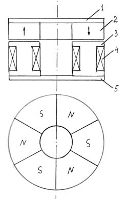
Рис. 1. Схема 6-полюсного низкооборотного электрического генератора: 1 – верхнее основание (низкоуглеродистая сталь); 2 – постоянный магнит (6-полюсное аксиальное намагничивание); 3 – сердечники катушек (низкоуглеродистая сталь); 4 – обмотки катушек (медный провод в эмалевой изоляции); 5 – нижнее основание (низкоуглеродистая сталь).
Постоянный кольцевой магнит (2) крепится к стальному верхнему основанию (1), способному вращаться относительно неподвижного нижнего основания (5), также сделанному из стали для уменьшения магнитного сопротивления. На нижнем основании крепятся стальные сердечники (3), на которые надеты катушки (4). Число катушек m в данном случае равно числу полюсов n (m = n = 6). Кольцевой магнит может быть сплошным или набранным из отдельных призматических или дисковых магнитов (число магнитов равно числу полюсов n). Направление намагниченности магнита аксиальное (параллельно/антипараллельно оси генератора). Стальные сердечники катушек имеют полюсные наконечники, форма которых идентична форме магнитных полюсов (сектор, круг или прямоугольник). Постоянный кольцевой магнит (2) с верхним основанием (1) образуют ротор генератора, а нижнее основание (5) с катушками (4) и сердечниками (3) - статор.
Для использования генератора совместно со стабилизаторами напряжения, а также аккумуляторными батареями напряжением 12 или 24 вольта желательно, чтобы его выходное напряжение было достаточно высоким (амплитудное значение не меньше 10 вольт при использовании преобразователя напряжения, а при подключении аккумуляторной батареи через выпрямитель - больше ее выходного напряжения на величину падения напряжения на выпрямителе) при низких скоростях вращения (порядка одного оборота в секунду). Это позволило бы уменьшить потери в преобразователях, применяемых для стабилизации напряжения или зарядки аккумуляторов и упростить их схему.
Требуется сделать упрощенный расчет выходного напряжения генератора с использованием параметров, зависящих от конструкции: n – число полюсов, B0 – максимальное значение (амплитуда) индукции в зазоре, S – площадь потокосцепления (площадь полюса), m – число катушек, N – число витков одной катушки, f – частота вращения, T – период вращения (время одного оборота), w – круговая частота вращения (угловая скорость).
Вариант 1
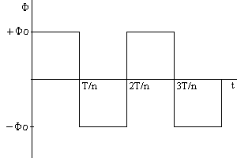
Предположим, что количество катушек равно количеству полюсов магнита (m = n), а при вращении магнита относительно катушек индукция в зазоре мгновенно изменяется от -B0 до +B0 и от +B0 до -B0 (то есть ротор вращается не плавно, а скачками). Магнитный поток через сердечник катушки, соответственно, мгновенно изменяется от -F0 до +F0 и от +F0 до -F0, где F0 = B0S, в моменты времени 0, T/n, 2T/n и т. д. (период изменения 2T/n). Тогда в соответствии с законом электромагнитной индукции Фарадея [2]
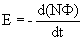
получаем ЭДС катушки:
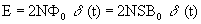
где d(t) - дельта-функция Дирака. Усредняя ЭДС по промежутку времени Dt = T/n, получаем значение амплитуды ЭДС одной катушки:
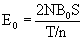
Так как T = 1/f, а f = w/(2p), то
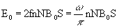
При последовательном соединении катушек для выходного действующего напряжения генератора получаем следующее выражение (считаем форму ЭДС прямоугольной, при этом Egen = nE0):
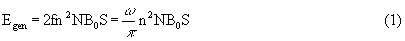
Вариант 2
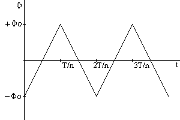
Предположим, что количество катушек равно количеству полюсов магнита (m = n), а при вращении магнита относительно катушек магнитный поток через сердечник катушки линейно изменяется от -F0 до +F0 и от +F0 до -F0, где F0 = B0S (период изменения 2T/n). Тогда в соответствии с законом электромагнитной индукции Фарадея [2]

получаем амплитуду ЭДС одной катушки:
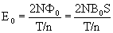
При последовательном соединении катушек для выходного действующего напряжения генератора получаем следующее выражение (форма ЭДС прямоугольная, при этом Egen = nE0):
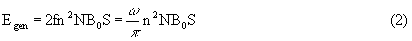
Вариант 3
Предположим, что количество катушек равно количеству полюсов магнита (m = n), а при вращении магнита относительно катушек магнитный поток через сердечник катушки изменяется по закону F = F0 cos(nwt/2), где F0 = BeffS. Здесь Beff – эффективное значение магнитной индукции в зазоре, получаемое усреднением по площади полюса. В соответствии с законом электромагнитной индукции Фарадея [2]

получаем эдс катушки:
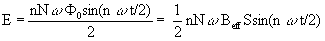
Так как f = w/(2p), получаем для амплитуды ЭДС одной катушки выражение:
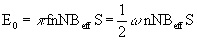
При последовательном соединении катушек для выходного действующего напряжения генератора получаем выражение (форма ЭДС синусоидальная, Egen = nE0/21/2):
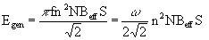
Эффективное значение магнитной индукции Beff может быть получено усреднением магнитной индукции в зазоре по площади полюса. Если распределение магнитной индукции описывается синусоидальным законом, то можно считать Beff ≈ (2/p)B0. Тогда выходное действующее напряжение генератора
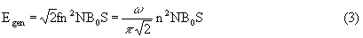
С учетом принятых приближений можно считать, что полученные формулы (1), (2) и (3) хорошо соответствуют друг другу. Расчет по этим формулам может применяться и для других конструкций многополюсных генераторов на постоянных магнитах. Испытания сконструированного по схеме рис. 1 низкооборотного генератора [1] показали, что расчет по варианту 3 наиболее точно отражает характеристики генератора: магнитный поток в зазоре и, соответственно, ЭДС генератора изменяются по синусоидальному закону, выходное действующее напряжение генератора с хорошей точностью согласуется с рассчитанным по формуле (3).
Для расчета выходного напряжения генератора (действующего и амплитудного) по формуле (3) может быть использована программа PM_Generator. Программа предназначена для работы с операционными системами (ОС) Windows 3.1, Windows 95, 98 и XP (с другими ОС семейства Windows не проверялась). Файл PM_Gen10.rar (~85 Кбайт) следует распаковать в заранее созданную папку. Упаковка производилась с помощью WinRar 2.80. Результат распаковки: PM_Gen10.exe - исполняемый файл программы. После запуска программы можно вводить параметры генератора и производить расчет нажатием соответствующей кнопки. При вводе данных учитывайте принятый в ОС формат разделителя для десятичной дроби: точка или запятая, например, 0.0004 или 0,0004. При необходимости надо установить для ОС точку в качестве десятичного разделителя или вводить исходные данные с запятой, если в качестве десятичного разделителя в ОС используется именно она. Скопированные файлы могут быть проверены на отсутствие вирусного кода в режиме on-line [6].
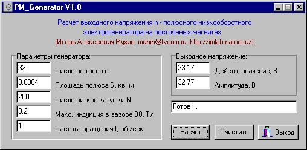
Рис. 2. Внешний вид окна программы PM_Generator (версия 1.0).
Например, производя расчет для постоянного магнита из феррита бария (B0 ≈ 0.2 Тл) при числе полюсов n = 32, N = 200 витков, S ≈ 4 см2 = 0.0004 м2 и частоте вращения f = 1 Гц (один оборот в секунду), получаем действующее напряжение генератора ≈23 вольт и амплитудное ≈32 вольт (см. рис. 2). При таком выходном напряжении для зарядки 12-и и даже 24-вольтовой аккумуляторной батареи можно использовать диодный мост и простое реле напряжения для отключения генератора при 100 % заряженном аккумуляторе. Ограничение зарядного тока будет происходить за счет внутреннего сопротивления генератора (суммарное сопротивление обмоток).
Зависимость выходных параметров генератора от числа полюсов
Выходное напряжение генератора может быть найдено по формуле (3):
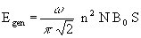
Тогда электрическая мощность генератора в режиме короткого замыкания:
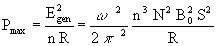
где R – активное сопротивление одной катушки генератора.
Найдем зависимость выходного напряжения генератора и электрической мощности от числа полюсов кольцевого магнита. Будем считать, что каждая катушка генератора представляет из себя цилиндрический соленоид, имеющий геометрические размеры: R1 – внутренний радиус, R2 – внешний радиус, H – высота, намотанный проводом диаметром d с фактором упаковки l [7] (рис. 3).
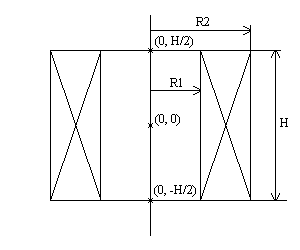
Рис. 3. Геометрические параметры
цилиндрического соленоида: R1 – внутренний радиус,
R2 – внешний радиус, H – высота.
Количество витков цилиндрического соленоида может быть найдено по формуле:
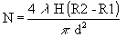
Активное сопротивление:
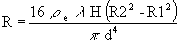
где re – удельное электрическое сопротивление обмоточного провода.
Тогда:
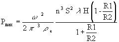
В первом приближении:
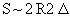
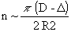
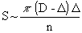
где D – внешний диаметр кольцевого магнита, D – ширина кольца.
При этих приближениях:
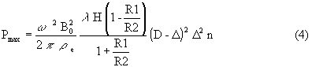
Например, для генератора [1] с шестиполюсным кольцевым магнитом типоразмера К70 х 24 х 12 из феррита бария (D = 0.07 м, D = 0.023 м, B0 = 0.2 Тл, n = 6) с катушками, намотанными медным проводом (re = 1.67 ∙ 10-8 Ом ∙ м, R1/R2 = 0.5, H = 0.02 м, l = 0.6) электрическая мощность в режиме короткого замыкания в соответствии с формулой (4) составит примерно 100 мВт при частоте вращения 1 оборот в секунду (w = 6.28 рад/сек). Экспериментальное значение примерно 140 мВт. Соответствие достаточно хорошее, если учесть, что реальная конструкция [1] имеет отличия от использованной в расчетах (рис. 1).
При изменении числа полюсов можно считать, что относительные размеры катушки (R1/R2) и ее высота H не изменяются. Тогда электрическая мощность генератора в режиме короткого замыкания растет прямо пропорционально числу полюсов, а также прямо пропорционально квадрату частоты вращения, квадрату индукции в зазоре и квадратам размеров кольцевого магнита (внешний диаметр, ширина кольца).
Действующее значение выходного напряжения генератора в режиме холостого хода:
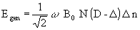
Или
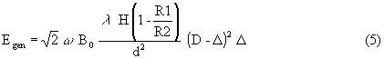
Расчетное значение выходного напряжения генератора [1] по формуле (5) 3.4 В при частоте вращения 1 оборот в секунду - выше измеренного (2 В). Расхождение можно объяснить тем, что в реальной конструкции [1] площадь полюсного наконечника сердечника катушки меньше площади полюса магнита почти в 2 раза.
Если увеличивать число полюсов генератора и, соответственно, уменьшать размер R2 катушки, сохраняя неизменными ее высоту H и отношение R1/R2, то при намотке катушек проводом одного диаметра выходное напряжение генератора будет оставаться приблизительно постоянным.
Выводы
При постоянной угловой скорости вращения выходное напряжение многополюсного генератора на постоянных магнитах растет пропорционально квадрату числа полюсов при условии, что площадь полюса не изменяется, то есть либо используется сплошной кольцевой магнит большего диаметра, либо увеличивается количество магнитов, из которых набирается кольцевой магнит (1 - 3).
Увеличение числа полюсов при использовании кольцевого магнита заданных размеров приводит к уменьшению площади потокосцепления S пропорционально увеличению числа полюсов n. Если число витков катушек N остается неизменным, чего можно добиться, уменьшая диаметр обмоточного провода, то выходное напряжение генератора Egen будет расти пропорционально числу полюсов n. Если катушки наматываются обмоточным проводом заданного диаметра, то при увеличении числа полюсов (и, соответственно, уменьшении размера катушки) число витков одной катушки N уменьшается. Выходное напряжение генератора Egen при этом будет оставаться приблизительно постоянным при увеличении числа полюсов n (5).
Электрическая мощность генератора не зависит от диаметра обмоточного провода и растет прямо пропорционально квадратам размеров кольцевого магнита (внешний диаметр, ширина кольца) и прямо пропорционально числу его полюсов (4).
Таким образом, при конструировании низкооборотного электрического генератора по вышеприведенной схеме необходимо использовать кольцевой магнит с максимально возможной остаточной индукцией, как можно большего внешнего диаметра и ширины кольца с максимально возможным числом полюсов, подбирая за счет изменения диаметра обмоточного провода число витков катушек таким образом, чтобы выходное напряжение генератора находилось в требуемом диапазоне при заданных частотах вращения. Катушки желательно наматывать проводом с наименьшим удельным сопротивлением (медным) с наибольшим возможным коэффициентом заполнения формы (фактором упаковки). Достаточная общность вышеизложенных рассуждений позволяет сказать то же самое и в отношении других конструкций электрогенераторов с ротором на постоянных магнитах.
Число катушек должно соответствовать числу полюсов. Если число катушек равно числу полюсов магнита (m = n), то при нахождении сердечника катушки напротив полюса кольцевого магнита за счет сил притяжения возникает большой момент сопротивления, для преодоления которого требуется значительное усилие (большая сила ветра). Поэтому можно увеличить или уменьшить число катушек на единицу (m = n + 1, m = n - 1), что позволит существенно уменьшить амплитудные значения момента сопротивления. Подобное решение использовано в конструкции 6-полюсного генератора [1], в котором число полюсов магнита n = 6, число катушек m = 7, 6-полюсного генератора [4], в котором число полюсов магнита n = 6, число катушек в каждой из двух групп m = 5 (дополнительно группы катушек сдвинуты друг относительно друга на угол в 36 градусов) и 18-полюсного генератора [5] (число полюсов магнита n = 18, число катушек m = 19). Можно вообще отказаться от применения стальных сердечников в катушках, тогда момент сопротивления в режиме холостого хода будет близок к нулю при любом положении ротора. Такие катушки необходимо делать минимальной высоты, сравнимой с величиной зазора между магнитом и катушкой, чтобы уменьшение магнитной индукции в зазоре было не слишком существенным. Число катушек может быть при этом равно числу полюсов магнита (m = n).
Ссылки:
Автор выражает благодарность Розину М. Н. за критические замечания, которые были учтены при корректировке материала.
08.12.2003
09.09.2005
20.09.2005
07.11.2005
17.11.2005
13.02.2006
27.06.2006
08.02.2007
22.06.2010
04.04.2018
Альтернативные источники энергии
Компьютеры и
Интернет
Магнитные поля
Механотронные системы
Перспективные
разработки
Электроника и
технология